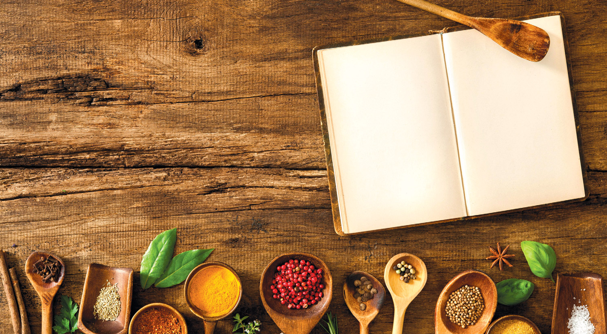

About Reduce.Reuse.RECIPE
We all have leftover ingredients in our fridge that are doomed for disposal, despite our best intentions. Reduce.Reuse.RECIPE provides an environmentally friendly alternative for these odds and ends. Enter multiple leftover ingredients that you hope to utilize on the Recipes page, and this app will provide a list of potential recipes. You can gain points every time you use a recipe, and the application keeps track of the user with the most points on a scoreboard.